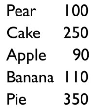
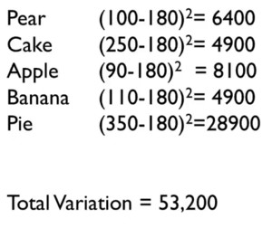
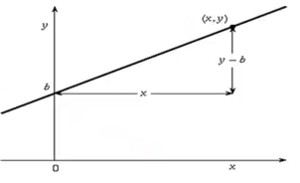
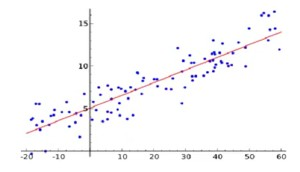
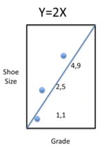
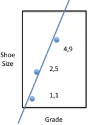
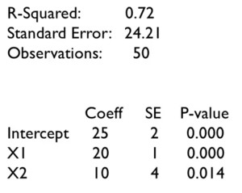
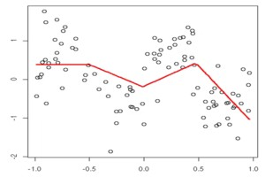
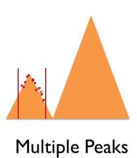
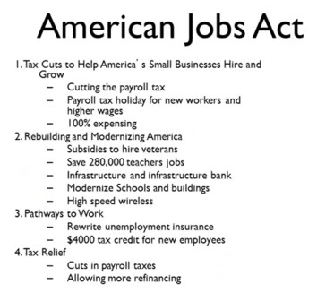

Introduction to categorical, linear, and nonlinear models
Categorical models allocates the data into different boxes. For example, trying to understand why some people live longer than others, we could divide them into people who exercise and people who do not exercise. By looking at the variation and the mean values in those boxes, you might find out whether or not this categorization says something about how long people live.

Linear models assume that some variable Y depends on variable X, so Y is a function of X or Y = f(X).
For instance, if Y is life expectancy, X might measure physical exercise. Thus, life expectancy is a function of how much a person exercises.
An important question is how we produce the linear model from the data. The line in the graph must represent the data as well as possible.
Nonlinear models could be represented by functions that do not produce a straight line, e.g., exponential growth functions. The diversity of nonlinear functions are enormous.
The big coefficient refers to using the coefficient corresponding to the main effect size to make decisions. e.g., a function of school quality might be
Y = a_1X_1 + a_2X_2
Where:
- X_1 might be the class size and
- X_2 might be teacher quality.
Here a_1 and a_2 are the coefficients. These coefficients tell how important the variable is, so the bigger the coefficient, the more important the variable.
Linear models can lead to big coefficient thinking, and if these are valid, then that will serve decision-makers better than rules of thumb, intuition, or experience. However, as time passes, reusing the main effect of an old model may be inadequate. There could be data drift, or alternatively, any improvement due to the main effect may have petered out due to diminishing returns. Over time, overhalling dysfunctional policies can require new and radical thinking. Approaches like revisiting old assumptions and rethinking out of the box can lead to something new, which we call new reality thinking. A problem with big coefficient thinking is that it only works in areas with specific data available. Over time, new data may even switch the size of the coefficients, leading to a loss of confidence in the model. Significant breakthroughs are often made by shifting to areas without data. A “new reality” will arise when the projections of big coefficients or even the assumptions behind them can be seen as inadequate, and decision-makers decide to rebuild a new model.
Regression and Linear models can have negative coefficients, interaction terms and so on, which, with one negative term, can render the “big coefficient.” approximation or decision wrong.
Y = 6 X_1 + 6 X_2 - 8 X_3 \\ \text{subject to} (X_3 = max({X_1,X_2})) \tag{1}
We want to increase Y. The big coefficient is X_3, but it reduces Y. Reducing X_3 will reduce Y since it also reduces X_1, X_2 to increase. Increasing Y, we need to increase X_1 and X_2 together as increasing just one will increase X_3 and thus decrease Y. The bottom line is that under certain conditions not listed by Dr. Page, the big coefficient is a useful approximation, but this assumption is not generally true in regression models. Dr. Page introduces the concept of a “new reality” to counter the shortcomings of big coefficient thinking. Unfortunately, the new reality that was introduced seems to have arisen from a failure. Later, he makes a case that “new reality” is a policy based on some other effect. However, these new reality initiatives seem to have no evidence to back them up. So this seems like muddy thinking rather than Clear thinking
Categorical models
Categorical models allocate the data into different groups. Variation in and between groups can be capture much of the overall variation in variations in the data.
Example 1 e.g., at the time of the IPO of Amazon, most analysts categorized it as a delivery service like DHL or FedEx, and because the delivery business was such a cut-throat business companies in it have low-profit margins so they thought Amazon would be a bad investment. A few analysts thought Amazon would be a good investment because they saw Amazon as part of the new information economy. Different analysts put Amazon in a different boxes. Amazon did badly for over a decade then they started letting computers a totally different business model and then they did very well, so which box we choose matters for our investment portfolio and also which story you choose to tell.
dot.com crash & the information economy. 💩 💩 💩
Any time I hear the concept of “the information economy” I am sad to recall how this “rhetoric for a new economy” died with out when most of the dot.com companies burt through their VC/IPO money through incompetency or corrupt management caused a global recession. So I think Dr. Page is being disingenuous by picking this example.
I also recall Amazon had zero or negative profits for over a decade after the doc.com crash. It overhauled its business concept serval times before it became a “good” investment and is facing stiff competition in its primer market from chinese stores. Also over times there are many new stories coming out how Amazon is making profits by squeezing it workforce to work harder and for less that DHL and FedEx which are both partners and competitors.
Finally, the question this example raises is: How can we find build a model that knows to place novel items accurately into new boxes without any other examples. Because model are supposed to better than analysts. In reality categorical model are not as resourceful as an analyst, they can’t invent new categories. Event if is add some extra labels, without examples the model wont assign new items to these category.
Lump to live means that we create categories to make sense of the world. For example, if we see a car, we do not say there goes a 2003 Volkswagen 1.6 GTI, but we say car. We model to decide, plan, and design. One reason we lump is to make faster decisions. For example, a child may have a rule not to eat green items. This helps the child avoid eating grasshoppers, which it does not like to eat. However, the rule is not optimal. The child might forego a juicy pear in this way.

For example, you may have a list of calories per food item. We want to make sense of why some of these items have many calories and why others have not. The first thing we want to figure out is the average value . How much variation is there in the data? The mean is (100 + 250 +90 + 110 + 350) / 5 = 180 calories.
One way of determining the variation is the difference between every value and the mean. We take absolute values because these differences cancel each other out. Hence, the total difference from the mean is 80 + 70 +90 + 70 + 170 = 480.

In statistics, the differences are squared to make every value positive and to amplify more significant deviations. e.g., for the pear we get (100 - 180)^2 = 6,400, and for the pie we get 28,900. It shows that substantial deviations from the mean greatly impact the total variation.
The obvious categorization is that pears, apples, and bananas are fruit, while cakes and pies are desserts. The fruit values are 90, 100, and 110, with a mean of 100 and a total variation of 200, while the dessert values are 250 and 350, with a mean of 300 and a total variation of 5,000.
Total variation went down from 53,200 to 5,200. Hence, the categories substantially reduce the amount of variation. Variation can be seen as unexplained, so the categorization explained a lot.
The total variation explained is
(1 - 5,200/53,200)*100% = 90.2% \tag{2}
This is called the R-squared.
- If the R-squared is near 1, the model explains a lot of the variance in the data
- if it is near 0, it explains very little of the variance in the data
Sometimes, there is so much variation in the data that great models only have an R-squared of 5% to 10%. Sometimes, the situation is clear-cut, and the R-squared is nearly 90%. There is no standard measure for the R-squared of a good model, but in a class of models, a higher R-squared means that the model is better.
Experts tend to have many useful boxes. The previous example of fruits and desserts could be enhanced with categories like vegetables and grains. If you want to be good at understanding how the world works, you need to have a lot of categories, which must also be helpful and explain much variation.
Even if the model explains a lot of variation, it does not mean that the model is good. If we want to figure out what determines good school performance, and we make a distinction between schools with an equestrian team and those without one, we might find out that schools with equestrian teams do better. However, that does not mean that the equestrian team made the school good. Correlation is not causation.

Linear models
Linear models assume that there is some independent variable X and a dependent variable Y that is a function of X where Y = mX + b. This can be plotted in a graph. The value of m determines the slope. There are two questions: 1. sign of the coefficient: does Y increase or decrease with X? 2. magnitude of the coefficient: how much does Y increase for each unit increase in X?
Models are used to predict and to understand data. Assume we have a linear model for the price of a television: cost = \$15 \times length + \$100. So suppose we want to buy a 30-inch TV, then we can predict that it will cost $550. In this fashion, we can also try to predict the prices of counterfactual products, like a 100-inch TV.

One way to understand data is to make a line that fits the data. In this way, you can make a linear model that makes sense of the data and makes predictions. Even simple linear models are better than people. Professor Robyn Dawes wrote a paper comparing very primitive linear models.
One of his examples was 43 bank loan officers predicting which 30 of 60 companies would go bankrupt based on their financial statements. The bankers were 75% accurate, but a simple linear model based on the ratio between assets and liabilities was 80% accurate. In similar studies, experts did not do better than simple linear models.
Fitting lines to data
An important question is how much variation can be explained using the model. If we take just the mean and calculate the variation, then there would be much variation. If we draw the right line, it is possible to explain 87.2% of the variation. The question is how to draw the best line.

Let us do a simple example. Suppose we have three kids, and we want to figure out how much their grade explains their shoe size. We can see shoe size as a function of grade. The values for grade and shoe size for the three kids are (1,1), (2,5) and (4,9). The total variation from the mean 5 is: (5-1)^2 + 0 + (1-5)^2 = 32.
The goal is to make a linear model that explains as much of the variation as possible. Try $Y = 2X . The variation would be(1-2)^2 + (4-5)^3 + (9-8)^2 = 3$. In this way, (1 - 3/32) = 29/32 of the variation would be explained, which is over 90%. Nevertheless, this is just a guess.

So, how do we fit the best line?
Assume the line to be Y = mX + b. Here b is called the intercept, which is the value for Y when X = 0. How big is the total variation? How far would that line be from the data? That is (m + b - 1)^2 + (2m + b - 5)^2 + (4m + b - 9)^2 = 21m^2 + 14mb + 3b^2 - 94m - 30b + 81. It is now possible to find the values for b and m to make the total variation the smallest.
These values are:
b = -1 and m = 8/3 so that Y = -1 + (8/3)m.
In this case, the total variation would be
(2/3)^2 + (2/3)^2 + (2/3)^2 = (4/9)\times3 = 4/3. This would explain
(1 - (4/3)/32)
of the variation, which is over 95%. The line is now even closer to the data.
Suppose there are multiple variables. e.g., the test score Y of kids might depend on their IQ Q, teacher quality T and class size Z in the following way: Y = a + bQ + cT + dZ. We expect the coefficient d on class size to be negative and b as well as c to be positive.
Of the 78 studies on class size, 4 showed a positive coefficient, 13 had a negative coefficient, and 61 showed no effect. Even though we think that class size matters, it appears not to matter much, at least within the range that has been studied. Research has shown that teacher quality matters far more.
We can fit data in linear models. These models can often explain some percentage of the variation. The models also show us the sign and the magnitude of the coefficients. This shows whether the variable has a positive or a negative effect and how big that effect is, allowing us to make policy choices.

Reading regression output
Somebody may give we some regression output, and we may have to make sense of this. When we see regression output, then we deal with a linear model based on multiple variables and functions like
Y = m_1X_1 + m_2X_2 + \ldots + m_nX_n + b.
With multiple regression output, there is more than one X variable.
e.g., Y could be a test score depending on teacher quality T and class size Z so that the model function could be Y = cT + dZ + b. We could expect that better teachers lead to better results so that c > 0 and bigger classes lead to poorer results so that d < 0.
In the regression output, the standard error is 24.21, which tells us, on average, how much the values differ from the mean. The value of R^2 = 0.72, i.e., 72% of the variation, is explained by the linear model. There were 50 data points. The coefficient column tells us that the model is Y = 20X_1 + 10X_2 + 25.
If X_1 is teacher quality and X_2 is class size, then the positive value for the class size coefficient raises some questions. Maybe the data is wrong, or maybe our intuition is wrong. So, we have to dig a little deeper. The first issue is that we have only 50 observations, so the coefficient may not be correct. The standard error (SE) column gives the error in the coefficients.
For the intercept, the coefficient is 25, and the standard error is 2, so 68% of the values are expected to be between 23 and 27. Hence, we could be really sure that the coefficient is between 19 and 31. Similarly, we could be really sure that X_1 is between 17 and 23, and X_2 is between -2 and 22. The p-value gives the probability that the sign of the coefficient is wrong. We should not be so sure about the positive impact of class size on school performance.
The important issues to deal with are the following:
- How good is the model? How much of the variation does it explain?
- sign of the coefficient: does Y increase or decrease with X?
- magnitude of the coefficient: how much does Y increase for each unit increase in X?
- what is the probability that the coefficient is wrong?

From Linear to Nonlinear
There is a problem with linear regression. Phenomena in the real world are often nonlinear. The amount of nonlinear functions is enormous compared to linear functions. All kinds of graphs could be based on functions that are exponential, logarithmic, something else, or mixed.
How can we best-fit lines in messy situations if we only have techniques for using linear functions?
There are three approaches to get around this, which:
approximate nonlinear models with linear functions: we could use multiple linear functions to approximate a nonlinear model. Hence, we get different linear models for different ranges.
break up the data into different quadrants: we can draw lines in each quadrant that match the data as closely as possible, and to make the line continuous, we may have to forego drawing an optimal line for each quadrant separately.
include onlinear terms, e.g.
Y = m\sqrt{X} + b. \qquad
The Big Coefficient versus the New Reality
If we have some model like
Y = m_1X_1 + m_2X_2 + b
Where:
- Y might be sales,
- X_1 might be web advertising, and
- X_2 might be print advertising.
If the coefficient is m_1 > m_2, then we should advertise on the web rather than print. The coefficient is an evidence-based rank, and it is applied, for instance, in medicine, philanthropy, education, and management. Linear models based on evidence are better than guessing.
Evidence-based thinking with models works as follows:
- construct a model;
- gather data;
- identify important variables;
- change those variables;
Data science has seen a movement from the statistics era, in which data acquisition was expensive. However, the analysis was cheap, to an age where data is cheap, but the analysis is expensive. This has been called a movement towards big data. The big data approach is that we can begin with lots of data and fit the model later. Instead, we could do the following:
- gather data;
- find patterns;
- identify important variables;
- change those variables.
Big data does not make models obsolete. Models help to understand how the world works. Identifying the patterns is not the same as understanding where they came from, because:
- Correlation is not causation.
- Linear models tell the sign and magnitude of changes in dependent variables within the data range. However, we need some understanding to tell whether the model will hold outside the data range.
I am afraid I have to disagree with this characterization of big data.
Who are these people who can analyze big data without a model?
Also, almost all the models in his book and in the course are not constructed using Causal methods, which is how we can discriminate correlation from causation and model them appropriately.
Regression and other methods shown here are not except for this problem. If the effects are linear, a linear model should extrapolate. If the effects are nonlinear, then who can say it, and why use a linear approximation? Also, I only know mathematical methods for extrapolating how a model (linear or not) will behave outside the observed range. Probabilistically, by looking at higher moments of a distribution analytically by considering more terms in a Taylor approximation. Statistically, cross-validation and Structural modeling are used to determine the impact of various causes on each effect. Finally, if we have more data, lots of patterns we initially see can be due to random chance, and we may be able to capture much more subtle effects happening in the real world.
One crucial issue is feedback. e.g., We may think that anti-lock brakes will reduce the number of accidents. That may be true initially, but after a while, people may start to drive closer to the car in front of them, so the benefits of anti-lock brakes might fall off.
So the good old boys who tech Price theory at Chicago have many examples like this about the unintended consequence of some dentist’s intervention by adding fluoride to the water makes people brush their teeth less and having even more cavities…. But they make a good case in explain this by saying the dentist missed the point – people’s preferences wen’r to have perfect teeth, so they were happier to not have to brush their teeth as much. That is a more honest explanation. Now milton friedman went on TV and discussed things like seatbelt in cars, better tires and explained that if the market wants safer cars people will pay for them and that regulation is usually the least economically efficient way to go about it.
In the final analysis if people paid for anti-lock brakes then these reduced some accidents but not all accidents are caused by brakes locking and a car skidding. Head on collisions are a different story, burst tiers, falling asleep and many other reasons. I’m pretty sure that getting used to their fancy brakes didn’t go to their heads.
Dr. Page gave many trivial models, but this one is brought with purely hand waving.
A feedback mechanism can be positive or negative, but it is a nonlinear differential or difference equation.
The example is ridiculous - a person is taught how to drive, what distance to keep, etc. For a person to adjust to the new minimal distance of better brakes, they would have to have crashed the car non-fatally, at different speeds before and after the new brakes are introduced, and then make an adjustment based on that feedback - this cannot be an example of feedback.

A bigger problem is multiple peaks. For example, we might have some data in a small range that suggests a peak. Thus, based on this data, the peak seems to be the optimal point, and you miss a better point.
While this is true,
This, again, is a nonlinear phenomenon. The presence of a single peak indicate the effect is not linear - linear means approximating a straight lines and lines do not have peaks.
I am unsure if any local method can tell you if you are in a local or global maximum. What is certain is that the better you fit a single peak, the worse you are at fitting the other peak.
The new reality means that we may want to try something big and new, so we consider non-marginal changes. If we have only data in a small range, this may not help we very much. The multiple peak problem is just one instance of this issue.
Sometimes, big co-efficient thinking may be helpful, like taxing cigarettes to reduce healthcare costs and raise money to finance healthcare. A new reality might be implementing universal healthcare in the US. 1
1 it might be but I prefer to view Universal healthcare and taxing cigarettes say to reduce lung cancer as two different issues and thus both likely to be perhaps run in parallel as happened during Barak Obama’s presidency and later reversed by Donald Trump
The American Jobs Act is also an example of big coefficient thinking. A new reality was the US interstate highway system. In 1956, the US government allocated $25 billion, which is about $410 billion at today’s prices, for 41,000 miles of roads. This was creating something completely new, so it was difficult to calculate the employment effects. Big coefficient thinking can be good for minor changes but ignores new realities.
Sad to say that: The American Jobs Act is not an example of big coefficient thinking. There are just so many different tax cuts and clauses to make us think this is all based out of a big coefficient in somebody’s regression model 💩 The construction of public works like roads is nothing new - following the great depression the government initiated a massive number of public works project. 💩 It pretty simple for the bean counters in the treasury department to calculate how many jobs building 41,000 miles of road would create. 💩 Both are independent efforts tp solve different problems.

References
Note: this page is based on the following source:
- (Page 2014) MOOC, Course material & Transcripts.
- TA Notes by (Fisher 2014).
- Student notes by in (Klein Ikink 2016) and (Groh 2017).
Citation
@online{2023,
author = {},
title = {Lesson 6 - {Categorical} and {Linear} {Models}},
date = {2023-08-06},
url = {https://orenbochman.github.io/notes-model-thinking/posts/w06.html},
langid = {en}
}